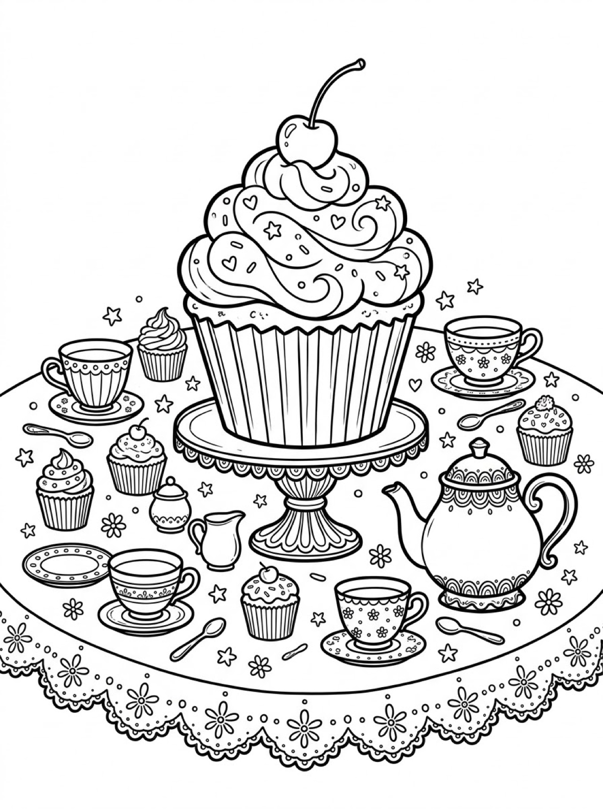
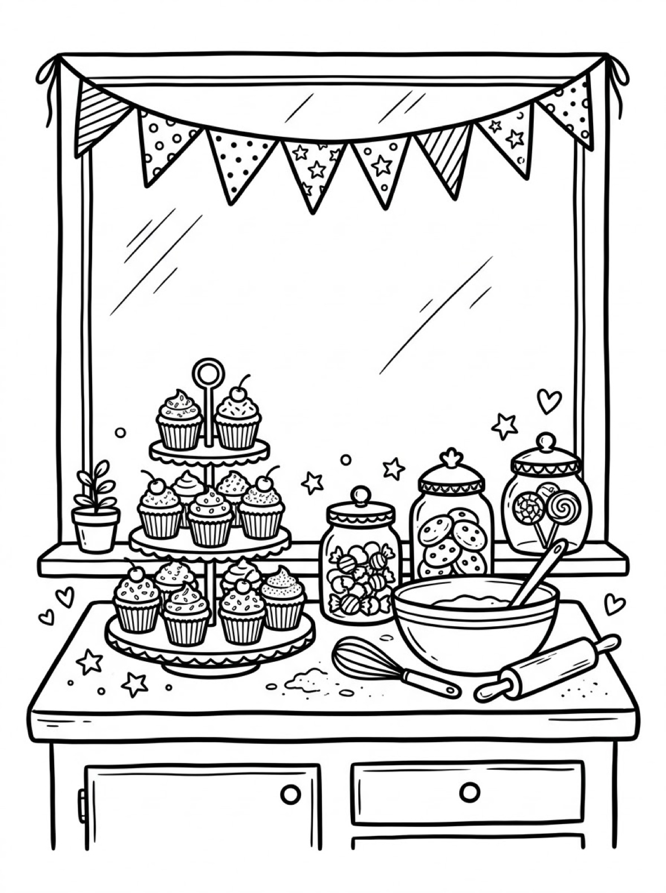
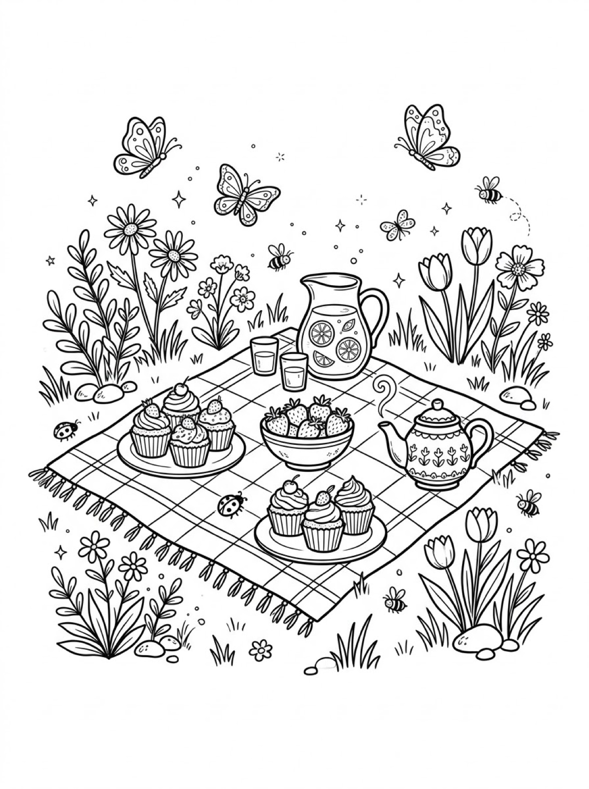

Free Cupcake Coloring Pages Tea Party, Bakery & Garden Picnic Printables
These free cupcake coloring pages give your child three sweet scenes to color — a giant cupcake at a tea party, a bakery stand piled high with cupcakes, and a garden picnic with cupcakes and strawberries. Download the set below, print at home on letter-size paper, and let the coloring fun begin. No signup needed.
Last updated: October 21, 2026
Quick Answer
Yes — this page has three free printable cupcake coloring pages: a giant frosted cupcake on a cake stand at a tea party, a bakery counter with a three-tier cupcake stand, and a garden picnic blanket with cupcakes and lemonade. Bold outlines and big spaces, made for little hands. Download, print on letter-size paper, and hand over the crayons — no signup, no cost.
At a Glance
- Ages: 3–8
- Pages: 3 free printables
- Format: Print at home, letter size
- Cost: Free, no signup
- Supplies: Crayons or markers
- Time: 10–20 minutes
🧁 Giant Cupcake Tea Party Coloring Page

🎨 Download Your Free Giant Cupcake Coloring Page
A giant cupcake with swirled frosting, sprinkles and a cherry, standing tall on a cake stand in the middle of a tea-party table — bold outlines, big spaces, zero signup.
⬇️ Download Free Giant Cupcake Page 🖨️ Print Giant Cupcake Page🎁 Free printable for preschoolers & kids
🧁 Bakery Cupcake Stand Coloring Page

🎨 Download Your Free Bakery Cupcakes Coloring Page
A three-tier stand piled with cupcakes on a bakery counter, with glass jars of cookies and candies, a mixing bowl, a whisk and a rolling pin — bold outlines, big spaces, zero signup.
⬇️ Download Free Bakery Cupcakes Page 🖨️ Print Bakery Cupcakes Page🎁 Free printable for preschoolers & kids
🧁 Garden Picnic Cupcakes Coloring Page

🎨 Download Your Free Picnic Cupcakes Coloring Page
Plates of cupcakes on a checkered picnic blanket, with a bowl of strawberries, a lemonade pitcher and a teapot, and butterflies and ladybugs in the flowers — bold outlines, big spaces, zero signup.
⬇️ Download Free Picnic Cupcakes Page 🖨️ Print Picnic Cupcakes Page🎁 Free printable for preschoolers & kids
More Coloring Pages
Tap any picture to open its theme page and download the free printable.


🧁 How To Use This Page
- Browse the three designs and pick the cupcake scene your child will love most.
- Tap download or print under that design — the file opens full-size, ready for letter-size paper.
- Print a couple of copies so your child can frost the same cupcake in different colors.
- Color together with crayons or markers and display the favorites.
🧁 Why Kids Love Cupcake Coloring Pages
A cupcake is party food, and coloring one feels like decorating it. Every swirl of frosting is a decision only your child can make — strawberry pink or mint green, sprinkles in a rainbow or all one color, the cherry red or bright blue. And because each design sets a whole scene around the treats — a tea party, a bakery counter, a picnic in the garden — the cupcake is only the first thing to color.
That freedom is what makes cupcake pages so repeatable. Print the same design twice and it never comes out the same — the giant cupcake can wear chocolate frosting on Monday and rainbow swirls on Friday. Kids practice grip, pressure and color planning while they work, and because every version is “right,” there is no frustration when a crayon slips outside the lines.
🧁 Meet the Three Cupcake Scenes on This Page
The giant cupcake tea party. A giant cupcake towers over a tea-party table from its pedestal cake stand, its swirled frosting scattered with sprinkle hearts, stars and dots and finished with a cherry on top. Around it sit a patterned teapot, four teacups on saucers, a little milk jug, a sugar bowl and four small cupcakes, all on a tablecloth with a lace edge of flowers. The cupcake itself is one big, bold shape, which makes this the best starting page for younger colorers, while the teacups and lace give older kids extra detail to enjoy.
The bakery cupcake stand. A three-tier stand stacked with eleven cupcakes stands on a bakery counter under a big window hung with patterned bunting — stripes, polka dots and stars. Beside it are glass jars of wrapped candies, cookies and lollipops, plus a mixing bowl, a whisk and a rolling pin left out from the baking, and a small potted plant on the windowsill. It is the busiest scene in the set, with something new to color in every corner.
The garden picnic. A checkered blanket is spread on the grass with two plates of cupcakes — six in all, topped with cherries and a strawberry — a bowl of strawberries, a pitcher of lemonade with lemon slices, two glasses and a teapot patterned with leaves. Butterflies, bees and ladybugs drift among the tulips and daisies around the blanket, so the coloring continues long after the last cupcake is frosted.
✏️ Cupcake Coloring Tips
- Pick the frosting color first. Cupcakes can be any flavor your child imagines — chocolate brown, strawberry pink, lemon yellow, or a full rainbow experiment. There is no wrong answer.
- Use the sprinkles and bunting for pattern practice. The giant cupcake's sprinkles and the bakery's bunting flags have shapes to fill with alternating colors, and the bakery stand makes a natural counting game: how many cupcakes can your child find?
- Name the colors out loud. “You chose pink for the frosting!” builds color words and keeps little colorers engaged for longer.
- Display the finished cupcake. A favorite page on the fridge or bedroom door is the fastest way to get asked for the next one.
🧁 Coloring Pages for Different Ages
For ages 3 to 4, start with the giant cupcake. It is one big central shape with a bold outline and wide frosting swirls, so little hands can color the cupcake without worrying about the table around it. Scribbling is fine at this age — they are learning how crayons move across the page and how hard to press.
For ages 5 to 6, the garden picnic is the sweet spot. The cupcakes are still big, friendly shapes, but the strawberries, butterflies and the blanket's checks add real choices: which squares of the blanket turn pink, and what color is the lemonade?
For ages 7 to 8, hand over the bakery cupcake stand. It carries the most detail — eleven cupcakes, three glass jars, patterned bunting and the baker's tools — and rewards careful coloring and patience. Older kids often spend the longest on this one.
🧁 More Cupcake Fun After Coloring
After coloring, ask your child to invent the flavors. What flavor is the giant cupcake? Who is coming to the garden picnic? Write their answers on the back of the page (or let them dictate while you write) and the sheet becomes a keepsake instead of a throwaway.
Keep the food theme going with the food coloring pages, where a market stall, a picnic and a whole bakery are waiting to be colored. And if a birthday is coming up, the happy birthday coloring pages have a big party cake with a blank banner your child can write a name on.
🔗 More Free Printables You’ll Love
- Free Food Coloring Pages A market stall, a picnic and a bakery full of tasty scenes to color.
- Free Happy Birthday Coloring Pages Party cakes, presents and a blank banner to write a name on.
- Free Cozy Coloring Pages Reading nooks, fireside chairs and quiet cabin scenes to color slowly.
- All Free Coloring Pages Browse every free coloring page on the site, organized by theme.
❓ Cupcake Coloring Pages FAQ
Are these cupcake coloring pages really free?
Yes — all three designs on this page are free original printables from MomYouNeedThis. Download them, print them at home, and color — no signup and no cost.
What ages are these coloring pages best for?
Kids ages 3 to 8 get the most from this set. Younger children can start with the giant cupcake and color its big frosting swirls, while older kids enjoy the detailed bakery counter and garden picnic scenes.
How do I print a coloring page?
Tap the download button under the design you want, then print the file on regular letter-size paper. The print button opens the full-size page in a new tab if you prefer to print from there.
Can I use these pages for a birthday party?
Yes — the giant cupcake tea party design makes a sweet party activity. Print a copy for each guest, set out crayons or markers, and let everyone decorate their own cupcake while the real cake is being served.
Can I make a coloring book from these pages?
Yes — print all three designs, stack them in order, and staple along the left edge. Add a cover sheet with your child's name on it for a finished homemade cupcake coloring book.